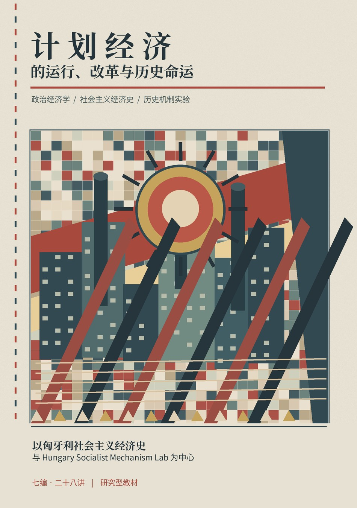

社会主义经济史 · 数字研究型教材
计划经济的运行、改革与历史命运
国家如何组织生产？改革改变了哪些约束？为什么社会主义经济产生了不同的历史结局？以匈牙利1956—1989年的制度史为主线，联系苏联、东欧与中国，辅以可审计的计算实验。
从第一讲开始体验互动模型
阅读原则：历史事实、理论解释、模拟输出与作者推论分层展示。HSM当前没有获得历史机制 SUPPORTED 的机制卡；互动实验仅用于揭示约束与反事实逻辑。
国家如何组织生产？改革改变了哪些约束？为什么社会主义经济产生了不同的历史结局？以匈牙利1956—1989年的制度史为主线，联系苏联、东欧与中国，辅以可审计的计算实验。
从第一讲开始体验互动模型
阅读原则：历史事实、理论解释、模拟输出与作者推论分层展示。HSM当前没有获得历史机制 SUPPORTED 的机制卡；互动实验仅用于揭示约束与反事实逻辑。